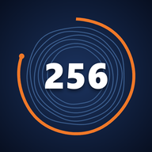

請求書ラクラク サポート
見積書・納品書・請求書・領収書を iPhone だけで作って A4 の PDF にするアプリです。データは iPhone の中だけ。会員登録も広告もありません。
使い方（3 タップで 1 枚）
- 「設定」で屋号・住所・振込先・インボイス登録番号を一度入れます（書類に自動で入ります）。
- 「書類」の「＋ 作る」→ 種類（見積書・納品書・請求書・領収書）→ 取引先（2 回目からはタップで入ります）→ 品目と単価。入力のたびに自動で保存されます。
- 「PDF にする」→ 共有シートから LINE・メール・AirDrop・「ファイル」に保存。
よくある質問
無料で使える範囲は
書類は 3 枚まで無料で作れます（保存した書類の累計で数えます。削除しても戻りません）。作った 3 枚の修正と PDF はずっと無料です。4 枚目からと、印影・ロゴ・色テンプレは「無制限・印影・テンプレ」（アプリ内課金、1 回の購入でずっと使えます）が必要です。バックアップの書き出し・読み込みは無料です。
見積書から請求書を作りたい
見積書を開いて、下の「この内容で納品書を作る」「この内容で請求書を作る」を押すと、品目と取引先を引き継いだ新しい書類ができます。請求書から領収書も同じです。
インボイス（適格請求書）の書き方は
「設定」の「インボイス登録番号」に T＋13 桁を入れ、消費税を「課税事業者」にすると、登録番号・税率ごとの合計と消費税額・軽減税率の印（※）が自動で入ります。消費税の端数は税率ごとに合計してから 1 回だけ処理します（切り捨て・四捨五入・切り上げを設定で選べます）。免税事業者の方は「免税事業者」を選ぶと消費税の内訳と登録番号を書きません。記載事項の詳細は 国税庁 No.6625 をご覧ください。
源泉徴収の欄は
「作る」画面の「源泉徴収税額を書く」をオンにすると、税抜の報酬額を基に 100 万円以下は 10.21%、100 万円を超える部分は 20.42% で計算し、「源泉徴収税額」と「差引お支払額」を書類に出します（国税庁 No.2798）。対象になる報酬かどうかは取引先にご確認ください。
PDF の文字がずれる・切れる
書類は A4 固定で作り、表の列幅も固定しています。品目名が長いときは折り返します。もしずれる場合は、どの書類（種類・行数）で起きたかをお問い合わせからお知らせください。架空のデータで再現して直します。
印影を載せたい
「設定」→「印影」で「屋号から丸印を作る」（屋号・名前の文字で赤い丸印を作ります）か「写真から選ぶ」（紙に押した印影を撮った写真。白い背景は透明にします）を選びます。購入後に使えます。
iPhone を買い替えたら書類は引き継げますか
「設定」の「バックアップを書き出す」でファイル（.json）を「ファイル」アプリや iCloud Drive、メールに保存し、新しい iPhone で「バックアップを読み込む」を押してください。印影・ロゴ・自分の情報も一緒に戻ります。iPhone の移行機能でも引き継げます。
購入した「無制限・印影・テンプレ」が使えなくなった
同じ Apple アカウントでサインインし、「設定」の「購入を復元する」を押してください。
アプリを消すと書類はどうなりますか
iPhone の中の書類はすべて消えます。消す前にバックアップを書き出してください。
税金の計算は正しいですか
消費税・源泉徴収の計算は国税庁の案内に沿った目安です。取引の内容によって扱いが変わることがあるので、最終の確認は税務署・税理士にお願いします。
お問い合わせ
BOOTHのショップページの「ショップへのお問い合わせ」からご連絡ください。
株式会社256について
代表は、会社員をしながら自分の会社を運営しています。自分で請求書を出し、確定申告や帳簿をつけてきた経験から、個人事業主・会社員・家族の「お金の事務」をラクにするツールを作っています。